Contents
IEEE VTS Motor Vehicles Challenge 2021
Energy Management of A Dual-Motor All-Wheel Drive Electric Vehicle
Global results
Global point: 84.96 Final battery SoC: 84.96% The front axle drive torque constraint is respected The rear axle drive torque constraint is respected The cell temperature constraint is respected
Driving cycle
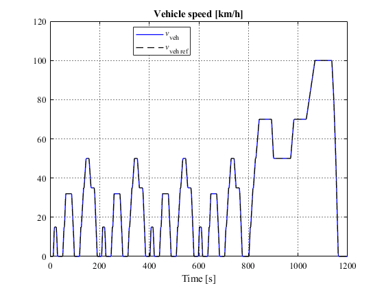
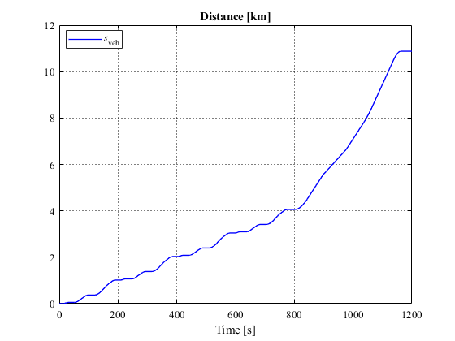
Battery
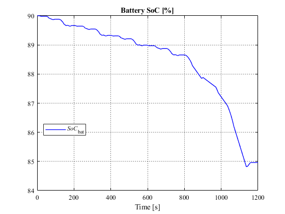
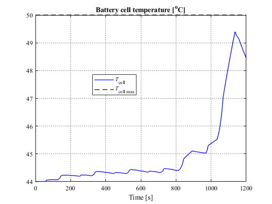
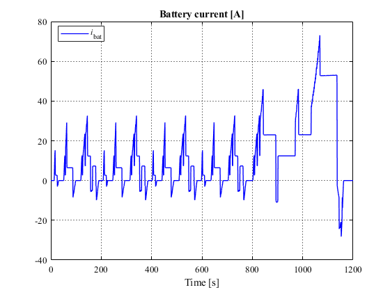
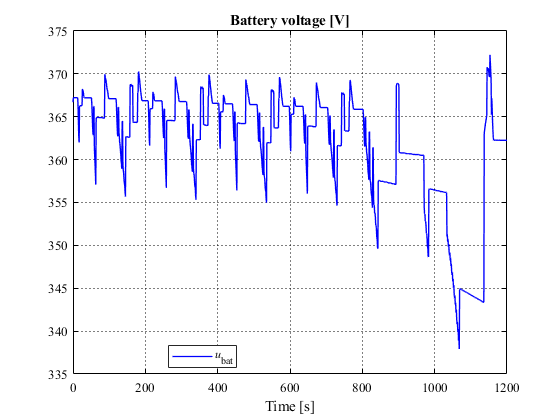
Force distribution
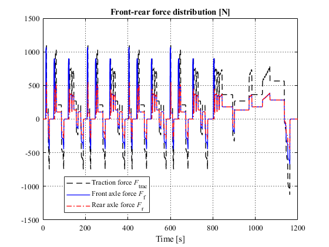
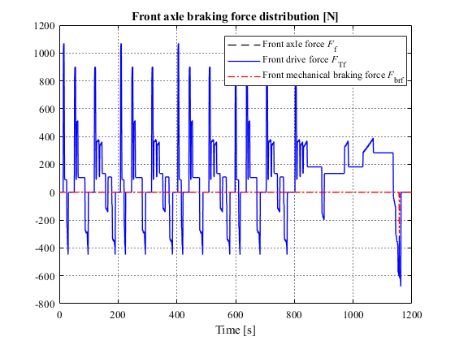
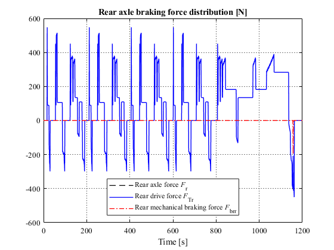
Electrical drives
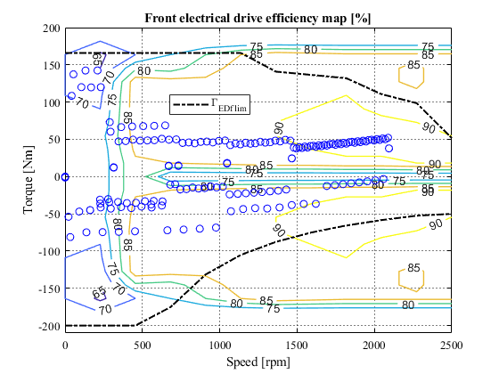
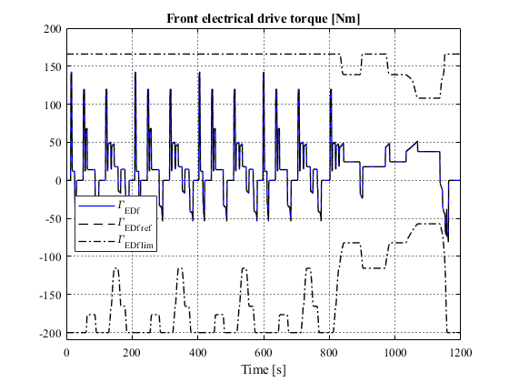
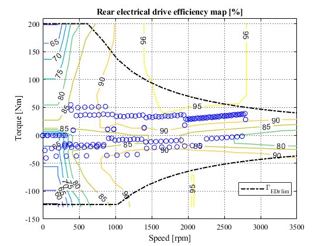
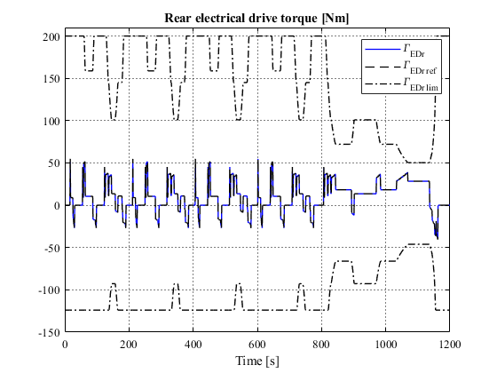